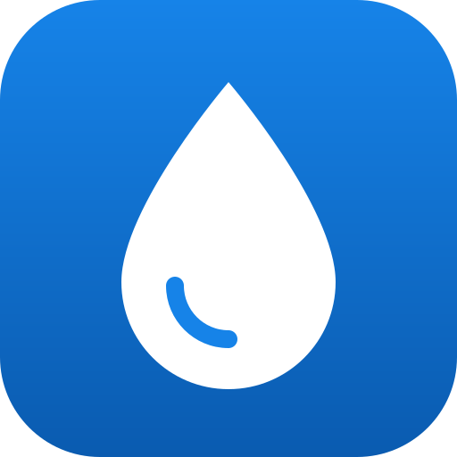

Für mehr Stationen hineinzoomen
Kostenlos Leitungswasser auffüllen

Leitungswasser gratis auffüllen – unterwegs, in Cafés, Läden und an Trinkbrunnen.
Mit Startbildschirm-Symbol, im Vollbild und offline nutzbar.
Bereits angesehene Stationen bleiben auch ohne Netz verfügbar. Für unterwegs kannst du alle rund 9.000 Stationen auf einmal speichern (einige MB Download). Adressen und Öffnungszeiten werden gespeichert, sobald du eine Station in der Liste siehst.
Die Stationen stammen von der Refill-Deutschland-Karte, gepflegt auf Karte von Morgen (Lizenz CC0). Kartenmaterial © OpenStreetMap-Mitwirkende, Ortssuche über Photon.
Inoffizielle App, nicht von Refill Deutschland betrieben. Fehler in einem Eintrag lassen sich direkt bei Karte von Morgen korrigieren. Du möchtest selbst Refill-Station werden? Hier geht's lang.
Diese App benötigt JavaScript.